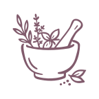

Storl-Akademie Styleguide
So sehen Farben, Schriften, Abstände und Komponenten auf storl-akademie.de aus. Zum Nachschlagen beim Schreiben und Gestalten von Inhalten.
Noch offen:
Das Signet für farbige Hintergründe fehlt noch, und das Logo in Grape ist bisher nur umgefärbt — siehe Logo.
Farben
Gemeint ist immer der Name, nicht der Hex-Wert. Die globalen Farben im Editor heißen genauso, damit dort nicht nach Hex-Werten gesucht werden muss.
Primärfarben
Sekundärfarben
Im Quelldokument tragen „Grape extra light“ und „Grape extra light 2“ denselben Hex-Wert. Bis das geklärt ist, gibt es hier nur eine der beiden.
Schriftfarben
Schriften
Arek für Überschriften, Buttons und den Weiterlesen-Link. Mulish für Fließtext und alles andere. Andere Schriften werden nicht eingesetzt.
Arek gibt es in drei Stärken — regular, semibold und bold — jeweils aufrecht und kursiv. Was der Styleguide „500 medium“ nennt und was er „semibold“ nennt, ist derselbe Schnitt: Arek meldet semibold als Stärke 500. Es sind dieselben Dateien, die auch storl-akademie.de ausliefert.
Typografie
Die Größen sind feste Stile. Im Editor werden keine Zwischenwerte eingetragen — wenn ein Stil fehlt, wird er hier ergänzt.
Angegeben ist jeweils der rem-Wert, in Klammern das, was er bei Standardeinstellung ergibt. Wer im Browser eine größere Schrift eingestellt hat, bekommt entsprechend mehr. Die Zeilenhöhe ist ein Faktor, kein Maß — sie wächst mit der Schriftgröße mit.
Logo
Das Signet ist aus dem Blatt des Logos abgeleitet und steht auch für sich allein — vor allem dort, wo wenig Platz ist.
Farbgebung
Auf hellem Grund stehen Logo und Signet in Grape, auf farbigen Hintergründen in Weiß. Andere Farbvarianten werden vermieden.
Das Logo in Grape ist aus der weißen Variante umgefärbt und noch nicht vom Gestalter bestätigt. Das Signet für farbige Hintergründe fehlt bisher.
Schutzraum
Rund um das Logo bleibt mindestens die Höhe und Breite des Akademie-Anfangsbuchstabens „A“ frei. Passt das nicht, wird das Logo verkleinert statt der Schutzraum verringert. Beim Signet ist der Schutzraum der halbe Kreisradius.
Mindestgröße
Im Web und in der App 115px breit (bei 72 dpi), im Druck 25mm (bei 300 dpi). Nach oben ist die Größe frei, solange Proportionen und Schutzraum stimmen.
Dateien
SVG ist die erste Wahl — es bleibt in jeder Größe scharf. PNG nur dort, wo kein SVG möglich ist. Alle PNGs haben einen transparenten Hintergrund.
| Datei | SVG | PNG (Breite in px) |
|---|---|---|
| Logo in Grape | logo-grape.svg | 120 · 240 · 480 · 960 |
| Logo in Weiß | logo-white.svg | 120 · 240 · 480 · 960 |
| Signet in Grape | signet-grape.svg | 64 · 128 · 256 · 512 |
{kind=link}
{kind=link}
{kind=link}
{kind=link}
{kind=link}
{kind=link}
{kind=link}
{kind=link}
{kind=link}
{kind=link}
{kind=link}
{kind=link}
{kind=link}
{kind=link}
{kind=link}
Icons
Jedes Icon lässt sich unten direkt als SVG oder PNG herunterladen. SVG ist die erste Wahl, PNG nur dort, wo kein SVG möglich ist. Die Icons sind in Grape (#815B6C) gezeichnet und bringen ihre Farbe selbst mit — sie übernehmen nicht die Textfarbe der Umgebung.
Einsatz
Illustrierte Icons stehen auf Kursseiten und zeigen Leistungen und Kursbestandteile auf einen Blick. Saisonale Pflanzen-Icons (Frühlings-, Sommer-, Herbst-, Winterpflanzen) ordnen Inhalte einer Jahreszeit zu. Zusammen mit einer Linie werden Icons außerdem als Divider eingesetzt.
Pfeile
Für Navigation und Aufzählungen. Es gibt sie in Grape für helle Hintergründe und in Weiß für farbige.
Buttons
Primary Button
Verlinkt auf interne Inhalte und Seiten außerhalb der Akademie-Seite. Steht auf weißem Hintergrund.
Secondary Button
Verlinkt auf externe Inhalte außerhalb der Akademie-Seite. Steht auf farbigen Flächen, z. B. im Newsletter-Modul oder im Footer.
Maße
Arek · 1.25rem (20px) · 500 medium · Zeilenhöhe 1.5 (30px) · Laufweite 0.01em (0.2px). Der Innenabstand hängt an der Schriftgröße des Buttons: 1.25em links und rechts (25px), 0.6em oben und unten (12px). Text mittig zentriert.
Links
Textlinks im Fließtext stehen in der Bold-Variante der Textschrift. Die Farbe sagt, wohin der Link führt.
Die Termine stehen im Jahreskurs — das ist ein Link innerhalb der Akademie-Seite.
Mehr Hintergründe gibt es auf Storl.de — das ist ein Link auf externe Inhalte.
Weiterlesen-Link
Steht unter einem gekürzten Text, mittig, mit Pfeil nach unten. Abstand zum Text: 1.5rem (24px).
Divider
Eine Linie mit einem Icon in der Mitte trennt Abschnitte innerhalb einer Lektion und kündigt an, was folgt. Es gibt Divider zu Heilpflanzen, Brauchtum, Erkennungsmerkmalen, Küche, Rezepten und Meditation sowie einen generischen mit dem Akademie-Blatt.
Text davor.

Text danach.
Das Illustrationselement sitzt mittig in einem Band von 8.5rem (136px) Höhe.
Abstände
Abstände rund um eine Überschrift sind im Styleguide als Bruchteil der
Überschriftenhöhe angegeben. Sie stehen deshalb in em und
hängen an der Überschrift selbst — wird die größer, wachsen die Abstände
mit. Alles andere sind feste Strecken im Layout und steht in
rem.
| Wo | Wert | Ergibt | Token |
|---|---|---|---|
| Über einer Überschrift | 1em | 1 Überschriftenhöhe | --space-above-heading |
| Zwischen Überschrift und Text | 0.333em | ⅓ Überschriftenhöhe | --space-below-heading |
| Zwischen Subline und Überschrift | 0.25em | ¼ Überschriftenhöhe | --space-subline |
| Zwischen Text und folgender Unterüberschrift | 1.333em | 1⅓ Überschriftenhöhe | --space-text-subheading |
| Zwischen Modulen und Elementen | 6.25rem | 100px | --space-module |
| Text über einem Bild | 2.5rem | 40px | --space-text-image |
| Bild über folgendem Text | 4.5rem | 72px | --space-image-text |
| Text zum Weiterlesen-Link | 1.5rem | 24px | --space-text-link |
| Band für Divider-Illustrationen | 8.5rem | 136px | --divider-block |
Die px-Werte in der Spalte „Ergibt“ gelten bei der Standard-Schriftgröße des Browsers, also 1rem = 16px. Sie sind das Ergebnis, nicht die Vorgabe — einzutragen ist der rem- oder em-Wert, wo das Feld es zulässt.
Ein paar Werte aus dem Styleguide-PDF gehen nicht glatt durch 16 und liegen deshalb auf der nächsten runden Stufe: 70px auf 4.5rem (72px), 135px auf 8.5rem (136px), der Fließtext von 19px auf 1.2rem (19.2px). Mehr als 2px weicht nichts ab.
Der Styleguide nennt für „Abstand zwischen Überschrift und Text“ je nach Layout-Beispiel ⅓, ½ oder eine ganze Überschriftenhöhe. Hier steht ⅓, bis geklärt ist, was wann gilt.